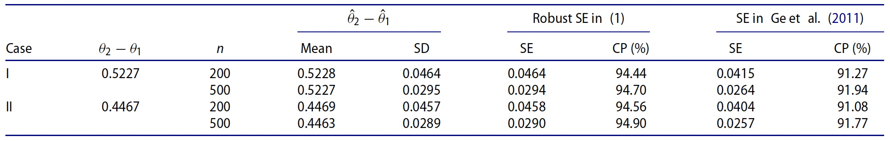
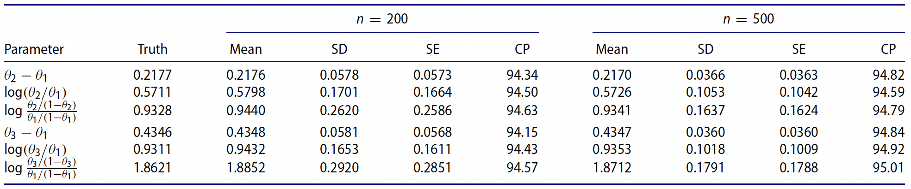

新文速递
使用说明:
1. 新文速递markdown模板(md文件)可在如下三种软件上编辑：
1) Rstudio(2023.03以上): 通过ctex宏包(支持TeX)可由"render"生成pdf (保留可编辑tex文件); 也可通过 "Visual" 方式进行可视化编辑；
2) 在VScode中可进行可视化编写，并通过"Export to Pdf"由md转成pdf(带无用的格式); 也通过"Edit in VSCode"支持源代码, 此时可通过"render"生成 html 或 pdf；
3) 在typora中编辑(可视化或源代码方法)
2. 对于熟悉TeX不熟悉markdown的作者，也允许他们直接按所提供的tex模板进行编辑.
3. For English author(s), they are required to provide: (1) background/motivation; (2) main results/conclusions with detailed facts in tables and/or figures. The length are suggested within two pages. We will provide the tanslation from English into Chinese.
YMAL 代码快删除，可提供三种预览：
- HTML
- PDF
新文速递 | 具有二元结果的随机化临床试验中经协变量调整的无条件治疗效果的稳健方差估计
Robust Variance Estimation for Covariate-Adjusted Unconditional Treatment Effect in Randomized Clinical Trials with Binary Outcomes
引用: Ting Ye, Marlena Bannick, Yanyao Yi & Jun Shao (2023), Robust variance estimation for covariate-adjusted unconditional treatment effect in randomized clinical trials with binary outcomes, Statistical Theory and Related Fields, DOI: 10.1080/24754269.2023.2205802
作者:
- Ting Ye, Department of Biostatistics, University of Washington, USA
- Marlena Bannick, Global Statistical Sciences, Eli Lilly and Company, USA
- Yanyao Yi, School of Statistics, East China Normal University, China
- Jun Shao, Department of Statistics, University of Wisconsin, USA
摘要:
为了提高具有二元结果的随机化临床试验中无条件治疗效应估计的精度和检验假设的功效，研究人员和监管机构建议使用g-计算作为协变量调整的可靠方法。然而，g-计算的实际应用由于缺乏可用于不同场合下感兴趣的无条件处理效果的稳健且可显式表示的方差估计公式而受到阻碍。为了填补这一空白，我们为g-计算估计量提供了显式且稳健的方差估计量，并通过模拟证明了其在实际使用中的可行性。
背景:
在随机化临床试验中，调整基线协变量被认为是一种提高估计精度和检测治疗效果的方法。2021年5月，美国FDA发布了在随机化临床试验分析中使用协变量的指南草案，并推荐g-计算作为”统计上具有二元结果的无条件治疗效果协变量调整的可靠方法”。然而，(1) 目前没有可用于不同场合感兴趣无条件治疗效果推断的g-计算估计量的稳健且显式表示的方差估计公式；(2) 已有文献(如Ge等,2011) 中关于风险差异和两个治疗组的公式，它是基于模型的，不适合作为模型稳健性推理范式；(3) Ge等(2011)的公式没有考虑到logistic 模型的中由于协变量和非线性而导致的变异性来源，这可能导致置信区间的覆盖概率偏低的情况出现。
考虑有\(n\)个受试者参与的\(k\)臂试验(\(n\)个受试者被随机分配到\(k\)个实验组). 令 \(\boldsymbol{A}_i\) 是 \(k\) 维处理示性向量，其取值\(\boldsymbol{a}_t\)表示第\(i\)个病人接受处理\(t\) (\(t=1, \ldots, k\)), 其第 \(t\) 个元素为1，其余元素为0. \(Y_i(t), i=1,2,\dots, n, t=1,2,\dots, k\) 是在处理 \(t\) 下的二元潜在结果，\(\boldsymbol{X}_i\) 是用于调整的基线协变量向量。令 \(\theta_t=E\left(Y^{(t)}\right)\), \(\boldsymbol{\theta}=\left(\theta_1, \ldots, \theta_k\right)^\top\) (其中省略了个体下标 \(i\)).
论文考虑的模型为 \(E(Y\mid\boldsymbol{A}, \boldsymbol{X})=\operatorname{expit}\left(\boldsymbol{\beta}_A^\top \boldsymbol{A}+\boldsymbol{\beta}_X^\top \boldsymbol{X}\right)\) (称为 logistic 工作模型). \(\hat{\mu}_t\left(\boldsymbol{X}_i\right)=\operatorname{expit}\left(\hat{\boldsymbol{\beta}}_A^\top \boldsymbol{a}_t+\hat{\boldsymbol{\beta}}_X^\top \boldsymbol{X}_i\right)\) 为响应变量 \(Y\) 在处理 \(t\) 下的预测概率，其中\(\hat{\boldsymbol{\beta}}_A\) 和 \(\hat{\boldsymbol{\beta}}_X\) 分别为 \(\boldsymbol{\beta}_A\) 和 \(\boldsymbol{\beta}_X\) 的极大似然估计. 则 \(\boldsymbol{\theta}\) 的g-计算估计为\(\hat{\boldsymbol{\theta}}=\left(\hat{\theta}_1, \ldots, \hat{\theta}_k\right)^\top\)，其中 \(\hat{\theta}_t=n^{-1} \sum_{i=1}^n \hat{\mu}_t\left(\boldsymbol{X}_i\right)\), 目标参数函数 \(f(\boldsymbol{\theta})\) 的g-计算估计为 \(\hat{f}(\boldsymbol{\theta})\), 其中 \(f(\boldsymbol{\theta})\) 的常用形式有
\[ \begin{aligned} f(\boldsymbol{\theta})= \begin{cases} \theta_t-\theta_s, & (\text{风险差}) \\ \log \frac{\theta_t}{\theta_s}， & (\text{风险比})\\ \log \frac{\theta_t /\left(1-\theta_t\right)}{\theta_s /\left(1-\theta_s\right)}，& (\text{优势比}) \end{cases} \end{aligned}. \]
论文的目的是要得到 \(\hat{f}(\boldsymbol{\theta})\) 的方差的估计.
主要结果:
1. 理论结果
\(\hat{f}(\boldsymbol{\theta})\) 的一致稳健的方差估计为
\[ n^{-1}\{\nabla f(\hat{\boldsymbol{\theta}})\}^T \hat{\boldsymbol{V}}\{\nabla f(\hat{\boldsymbol{\theta}})\}, \]
其中
\[ \hat{\boldsymbol{V}}=\left(\begin{array}{cccc}\hat{v}_{11} & \hat{v}_{12} & \ldots & \hat{v}_{1 k} \\ \vdots & \vdots & \ddots & \vdots \\ \hat{v}_{1 k} & \hat{v}_{2 k} & \ldots & \hat{v}_{k k}\end{array}\right), \]
\[ \begin{aligned} & \hat{v}_{t t}=\pi_t^{-1} S_{r t}^2+2 Q_{y t t}-S_{\mu t}^2, \quad t=1, \ldots, k, \\ & \hat{v}_{t s}=Q_{y t s}+Q_{y s t}-Q_{\mu t s}, \quad 1 \leq t<s \leq k,\end{aligned}, \]
记号 \(S_{r t}^2\), \(Q_{y t t}\), \(S_{\mu t}^2\)，\(Q_{y t s}\), \(Q_{y s t}\) 和 \(Q_{\mu t s}\) 为一些样本方差 (具体见原文).
2. 模拟结果
考虑三种情形:
- 情形I: \(P(Y=1 \mid \boldsymbol{A}, X)=\operatorname{expit}\left\{-2+5 I\left(\boldsymbol{A}=\boldsymbol{a}_2\right)+X\right\}\), 相应的 \(\left(\theta_1, \theta_2\right)=(0.2830,0.8057)\);
- 情形II: \(P\left(Y=1 \mid \boldsymbol{A}=\boldsymbol{a}_1, X\right)=\operatorname{expit}(-2+X)\), \(P\left(Y=1 \mid \boldsymbol{A}=\boldsymbol{a}_2, X\right)=\operatorname{expit}\left(3+1.5 X-0.01 X^2\right)\), 相应的 \(\left(\theta_1, \theta_2\right)=(0.2830,0.7297)\);
- 情形III: \(P(Y=1 \mid \boldsymbol{A}, X)=\operatorname{expit}\left(-2+2 I\left(\boldsymbol{A}=\boldsymbol{a}_2\right)+4 I\left(\boldsymbol{A}=\boldsymbol{a}_3\right)+X\right)\), 相应的 \(\left(\theta_1, \theta_2, \theta_3\right)=(0.2827,0.5004,0.7172)\).
表1：在情况I-II和简单随机化下，\(\hat\theta_2-\hat\theta_1\) 的模拟平均值和标准差(SD)，平均标准误差(SE)，和 \(\theta_2-\theta_1\) 的渐近置信区间的95%覆盖概率(CP).

表2：在情况III和简单随机化下，g-计算估计量的均值和标准差(SD)，平均标准误差(SE)，和基于稳健SE(1)的渐近置信区间的95%覆盖概率(CP).
